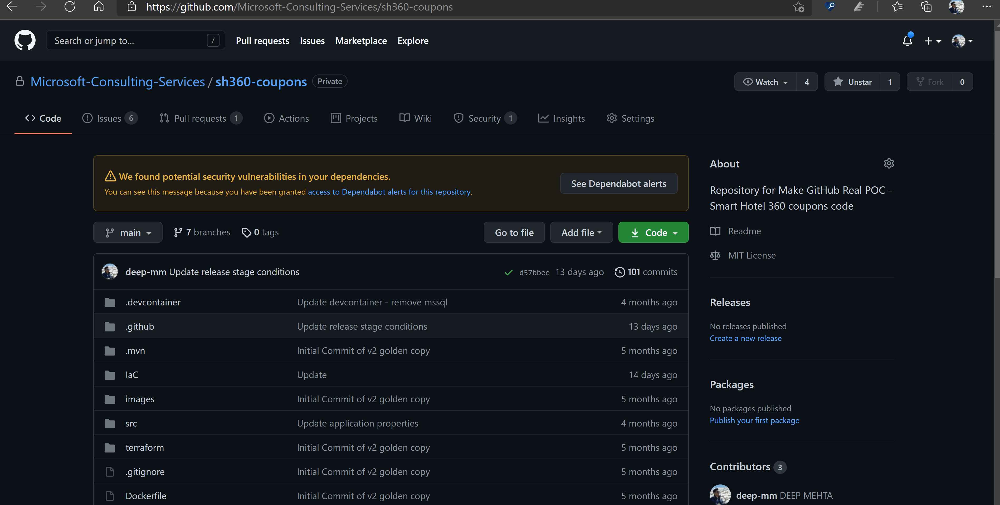
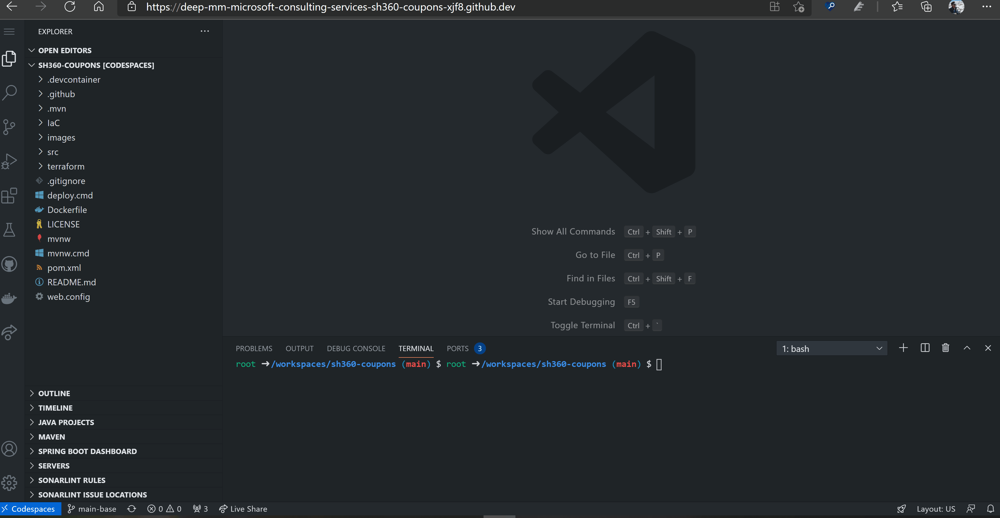
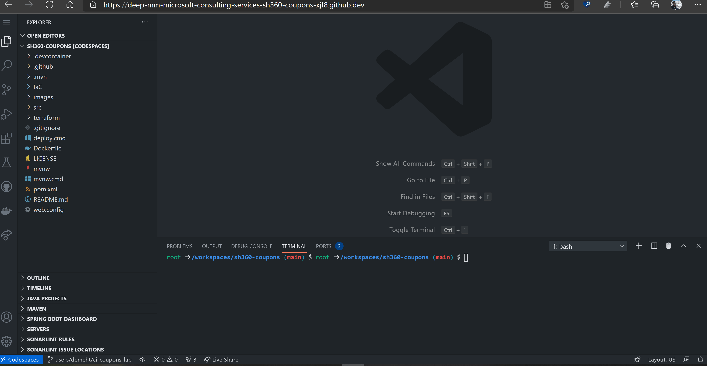
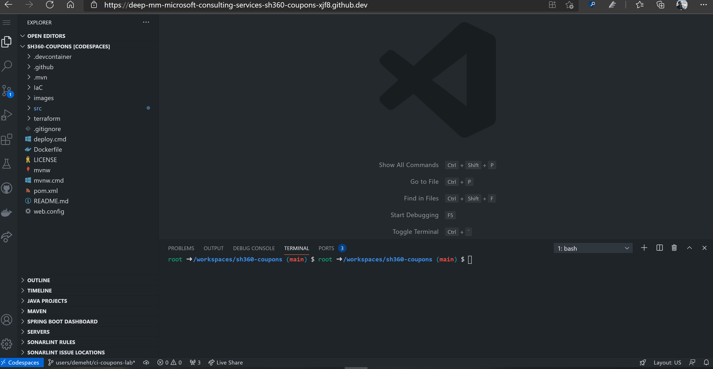
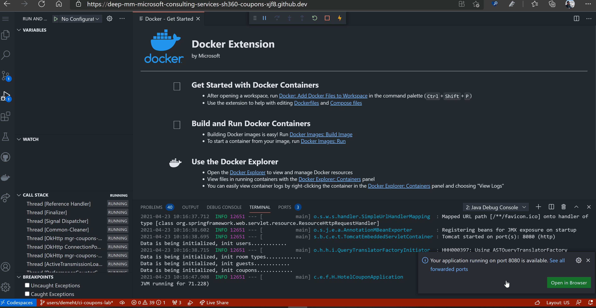
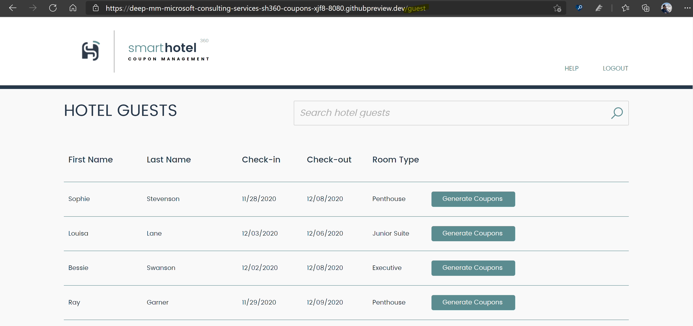
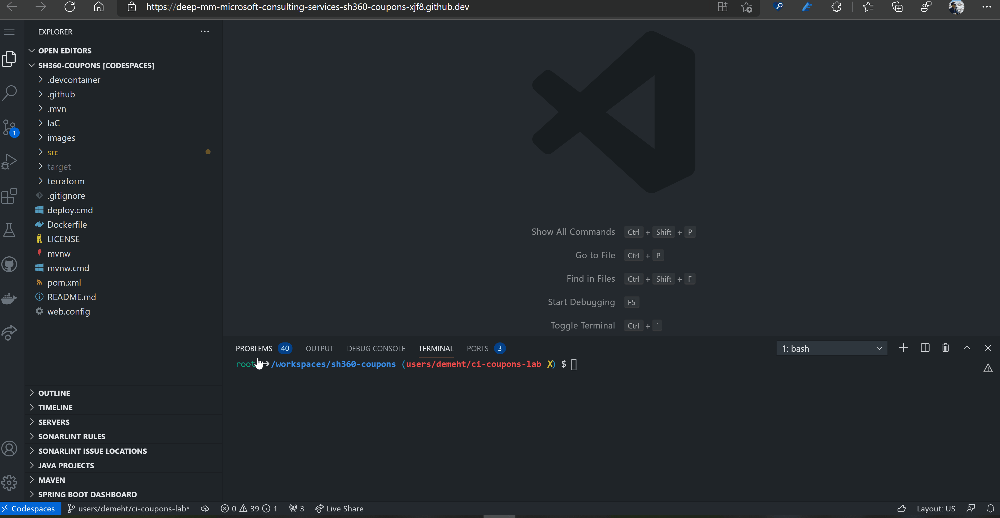
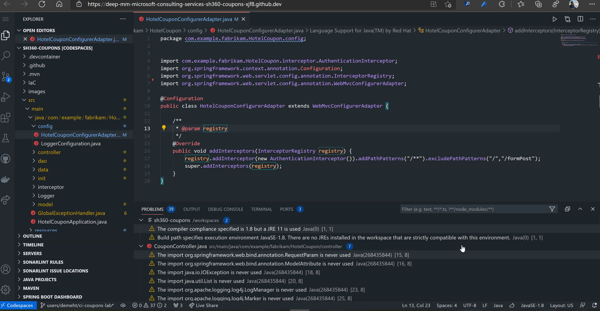
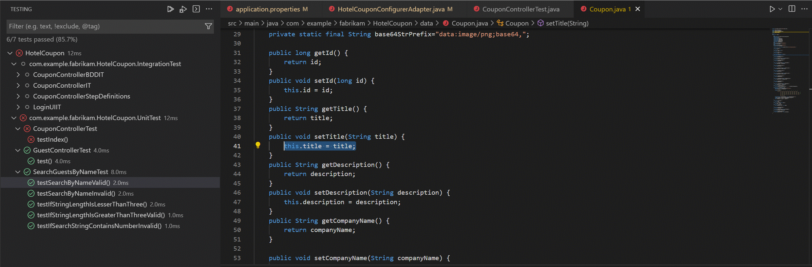
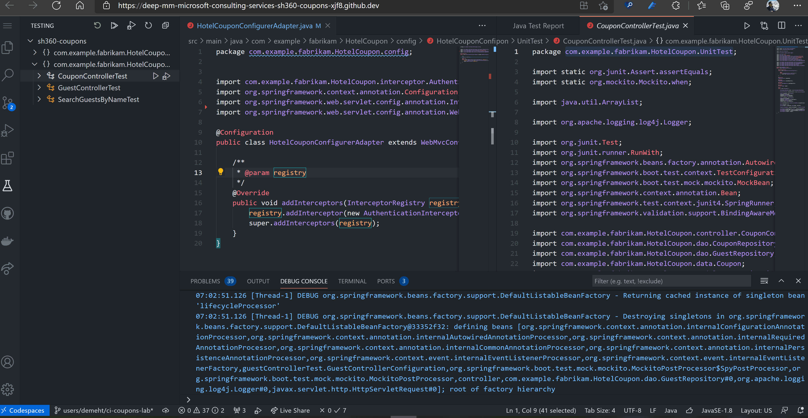

Home | Module 1 | Module 2 | Module 3 | Module 4 |
Module 1: Build, Test and Run application with GitHub Codespaces
GitHub codespaces provides the flexibility to code from anywhere and anytime. With codespaces you can code, build and test the application right from your browser. This module will provide an understanding of how to code and test the coupons application using codespaces, and how to commit these changes to GitHub repository.
Exercise 1: Initialize codespaces and run the application
To complete this exercise, you will initialize codespaces for the coupons repository and run the application locally.
Note
This exercise relies on GitHub Codespaces, a preview feature that isn't yet in GA. This may incur into some connectivity errors while performing the lab. If you face any of those, please reconnect to the codespaces until it gets more stable.
Prerequisites - Exercise 1
- Coupons code repository must be in place and bootstrap setup must be complete.
- Codespaces beta has been subscribed to and enabled for user account.
Open the GitHub - Coupons repository.
Select
Code > Open with Codespaces > + New Codespace. This may take about 5 minutes to initialize the first time.

Next, go to src > main > resources > application.properties. Here update these following values and save:
Note
cus_prefixand{team_suffix}are appends used for naming convention purposes. It consists of three and two characters respectively and can be found at the in your repository name:{cus_prefix}-mgr-sh360-coupons-{team_suffix}- spring.datasource.url -
jdbc:mysql://{cus_prefix}-dojo-coupon-dev-{team_suffix}.mysql.database.azure.com:3306/hotel_coupon?verifyServerCertificate=false&useSSL=false&requireSSL=false - azure.keyvault.uri -
https://{cus_prefix}keyvaultcouponsdev{team_suffix}.vault.azure.net/ - azure.keyvault.client-id - Client Id of service principal in Lab Access Information
- azure.keyvault.client-key - Client Secret of service principal in Lab Access Information

- spring.datasource.url -
We will run the application on codespaces and ensure its up and running. For the codespaces to use the right debugger, please open the
src/main/java/com/example/fabrikam/HotelCoupon/controller/GuestController.javafile in the editor. SelectRun > Run and Debug > Java. If prompted to switch to Standard mode from Lite mode, select Yes. This will take about 5 minutes when running the project for first time. Once the application is running you can open it by clicking onPortsin the window below and clicking on the link next to the port 8080.
Note
If you don't see the
Javaoption, please enable that by clicking onMenu > Run > Add Configuration > Select JavaNote
If you encounter Error 503, verify the Port Visibility for 8080 is
PublicOnce the application is running, a notification will be prompted to open the application in browser. Select Open in browser, and the application will open up. Enter following login credentials to login to the application:
- Username: me@smarthotel360.com
- Password: 1234

Upon login, it will redirect to a 404 page. Don't worry! Thats expected. Go back, and in the browser url bar, append /guest to the existing URL, and you will be redirected to the application home page. Feel free to explore the application.

Once you have explored the application, go back to the codespaces, and stop the application.
With live share functionality of codespace, you can take code peering and collaboration to next level. You can live share your codespace with another developer and you can work live on the same code and see how your integrations work.
Exercise 2: Run and fix local code analysis error
To complete this exercise, you will run code analysis for the application, and fix one of the identified error.
Prerequisites - Exercise 2
- Exercise 1 must be completed with application running successfully on codespaces.
- Codespaces beta has been subscribed to and enabled for user account.
Lets see how we can perform code analysis using codespaces and fix one of the code analysis errors. Select Problems, here you will find all the sonarlint code analysis errors listed.
Lets fix the errors under the HotelCouponConfigurerAdapter.java file. The error says that there are 2 import statements which aren't being used and thus should be removed. Thus remove the 2 unused import statements from the file and you will see the error disappearing from the Problems tab.

Exercise 3: Run unit tests
To complete this exercise, you will run the already written unit tests for the coupons application on codespaces.
Prerequisites - Exercise 3
- Exercise 2 must be completed with at least one code analysis errors fixed.
- Codespaces beta has been subscribed to and enabled for user account.
Since we have made code changes, our next step should be pushing these changes onto our branch and eventually ensure its merged with main branch. But before pushing our changes onto our branch which we created earlier, we need to ensure our code changes didn't break anything, and thus all unit tests should run success.
To run unit tests, on left menu, select Tests tab. Select the
sh360-coupons > com.example.fabrikam.HotelCoupon.UnitTest > Run. This will run all the 7 unit tests that have been written for this application.Once the test runs, the results can be found at the bottom bar of codespaces. Select that, and you should all 7 unit tests as passed, this is an assurance that our code changes didn't break anything and everything is still working as expected.

To see how the unit tests can help you to catch regression early in the development process we will need to create one on purpose to see how the unit tests fail. Open
src/main/java/com/example/fabrikam/HotelCoupon/data/Coupon.javareplacethis.title = title;bythis.title = " ";on line 41run the Unit tests again as you did in step 2
sh360-coupons > com.example.fabrikam.HotelCoupon.UnitTest > Run.you will notice that some of the tests now are red, which means they helped you detect the regression.

Now revert you last change (or replace line 41
this.title = " ";bythis.title = title;) and run the tests again to ensure everything is green.
Exercise 4: Commit and Push changes
To complete this exercise, you will stage, commit and push the changes that you made in the previous exercises.
Prerequisites - Exercise 4
- Exercise 3 must be completed and all unit tests must pass.
- Codespaces beta has been subscribed to and enabled for user account.
Now, lets commit and push our changes into the local branch we created. Please note, we should never commit the file application.properties, since this contains secrets which should not be exposed, and are only required to run the application locally.
Select the branch tab from left menu, here you wil find a list of files which have been modified locally. Stage only the changes in HotelCouponConfigurerAdapter.java file. Enter an appropriate commit message and select commit. Then push these changes onto the branch by clicking on the push icon next to the branch name at bottom of codespaces.

Key Takeaways
- GitHub codespaces can be used as any other IDE with advantages of being able to use it right from your browser anytime and anywhere.
- GitHub codespaces can be used to make code changes, run and test application.